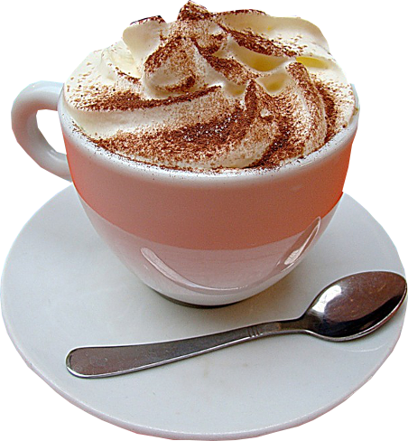

"Кафе...Любовь...Стоп"

Фанфик: всё о нём от начала и до финала
| Главная | Персонажи | О авторе | Описание фанфика |
|---|
Фанфик написанный по фэндому Мэловин, но его здесь не меньше, чем главной героини-Мередит.Всё это начинается с простой встречи в прибережном кафе. А что именно начигается, я думаю очевидно. А если вам нет, то надо прочитать его. Ну и ад, у них завязываются чувства, но не сразу. С самого начала они чувствуют к друг другу неприязнь. А всё из-за того, что Мередит берёт интервью у Мэловина, а ёё обращение к нему не удовлетворяет его же. Да к тому же сестра Мередит-Мэловинатор(фанатка артиста) Ну, это всё только краткое описание самого-самого начала, а всё остальное я оставляю вам, будущие читатели!
Сайт о фанфике с сайта "Фикбук" не предназначен для всеобщего обозрения.
Сделала Анна Любченко